شبنم رضاپور
کسی که PDFها را راضی کرد محتوایشان را بیکموکاست لو بدهند.
این جزوه با استفاده از جزوهساز پاپیروس و به صورت خودکار تولید شده است. ممکن است شامل خطا یا برداشت نادرست باشد و نیازمند بررسی و بازبینی مجدد است.
(ادیتور:دنیای میکروب دنیایی پر از شگفتی و زیباییست بیایید باهم به این دنیای شیرین سفر کنیم :) سفر خوبی را برایتان ارزو میکنم)
این جلسه از درس میکروبشناسی عمومی برای دانشجویان کارشناسی علوم آزمایشگاهی است. هدف، آشنایی با شکل و اندازهٔ باکتریها و ساختارهای آنها، از جمله گرانولها، واکوئلها، نوکلئوئید و دانههای ولوتین است. در ادامه، اجزای سلول باکتری، غشای سیتوپلاسمی، انتقال مواد، سیستمهای ترشحی و نمونههایی از کاربردهای میکروبشناسی محیطی و صنعتی بررسی میشوند.
در این ترم، مباحث پایهای میکروبشناسی هم از جنبههای آزمایشگاهی و هم از نظر مبانی نظری بررسی میشوند. بخش آزمایشگاهی شامل معرفی محیطهای کشت، طرز تهیهٔ آنها و یادگیری تستهای پایه است. این درس پایهٔ انجام آزمایشها و کار با محیط کشت را فراهم میکند و مبانی لازم برای درسهای تخصصیتر باکتریشناسی آزمایشگاهی و نظری را ارائه میدهد.
برای نمونه، در این درس بررسی میشود که رنگآمیزی گرم چگونه انجام میشود، باکتریها چگونه به گرممثبت و گرممنفی تقسیم میشوند و چه خطاهایی ممکن است باعث شوند باکتری گرممثبت را گرممنفی یا برعکس تشخیص دهند. همچنین دربارهٔ علت استفاده از محیط مککانکی (MacConkey) بهجای EMB صحبت میشود. در EMB گاهی انتظار میرود فقط گرممنفیها رشد کنند، اما بهصورت استثنا بعضی گرممثبتها هم رشد میکنند. این اتفاق در مککانکی کمتر است و به پپتون و ترکیبات آن مربوط میشود.
با یادگیری اثر آنتیبیوتیکها بر بخشهای مختلف باکتری، میتوان فهمید چرا برای بیماری تنفسی مرتبط با باکتریهای گرممثبت، معمولاً آنتیبیوتیکی که بیشتر بر گرممنفیها اثر دارد انتخاب نمیشود. سفکسیم و سیپروفلوکساسین broad-spectrum هستند، اما اثرشان بیشتر بر گرممنفیهاست؛ در مقابل، آزیترومایسین یا آموکسیسیلین بر ساختارهای باکتریهای گرممثبت ــ که بیشتر عفونتهای تنفسی را ایجاد میکنند ــ اثر دارند.
میکروبشناسی عمومی بیشتر بر «چرایی» و «چگونگی»، مبانی و مکانیسمها تمرکز دارد. در مقابل، باکتریشناسی ترم بعد شامل حفظ تعداد زیادی از باکتریها، ساختارها، داروها و واکسنهای آنهاست. در آزمون ارشد و دکتری معمولاً از باکتریشناسی ترم بعد بیشتر سؤال میآید؛ اما در درسهایی مانند ایمنیشناسی و بیوتکنولوژی و نیز برای داوطلبان کنکور پزشکی، مباحث میکروبشناسی این ترم بیشتر مورد سؤال قرار میگیرند.
کتابهای مرجع درس Jawetz و Murray هستند و مطالعهٔ هرکدام برای درس و آزمون ارشد کافی است. برای مباحث و جلساتی که دکتر فرهادی تدریس میکند، اسلایدها و PDFهای ارائهشده برای امتحان کافیاند و از مطالب خارج از اسلاید سؤال داده نمیشود. مطالعهٔ کتابها برای علاقهمندان یا کسانی که میخواهند توضیحات و جزئیات بیشتری بخوانند توصیه میشود.
مسئول درس نظری و عملی خانم دکتر توسل هستند. حدود ۵۰ درصد مطالب با دکتر فرهادی و ۵۰ درصد با ایشان است. سیاست کلی میانترم و وزن میانترم و فاینال را خانم دکتر مشخص میکنند. دکتر فرهادی معمولاً از هر جلسهای که پیش از میانترم تدریس میکند، ۵ تا ۶ سؤال تستی میدهد؛ برای مثال، اگر سه جلسه پیش از میانترم تدریس کند، از هر جلسه ۵ تا ۶ سؤال تستی خواهد بود.
باکتریها بهطور همزمان بر اساس خصوصیات میکروسکوپی و ماکروسکوپی بررسی میشوند:
| نوع بررسی | ویژگیهای بررسیشده |
|---|---|
| میکروسکوپی | رنگپذیری گرم و مورفولوژی زیر میکروسکوپ |
| ماکروسکوپی | ویژگیهای کلونی پس از کشت نمونهٔ بیمار روی پلیت حاوی محیط غنی از مواد موردنیاز باکتری |
شکلهای اصلی باکتریها عبارتاند از:
| شکل | توصیف در درس |
|---|---|
| باسیل (bacillus) یا rod | شکل میلهای؛ rod برای باسیلهای کاملاً میلهای و چهارگوش بهکار میرود. |
| کوکوس/کوکسی (coccus/cocci) | شکل کروی |
| اسپیریل (spirillum) | شکل فنری |
| کوکوباسیل | باسیل فشردهتر و گردتر، شبیه کوکسی؛ برخلاف rod تیپیک، حالت چهارگوش و میلهای کامل ندارد. |
آرایش کوکسیها از خصوصیات میکروسکوپی است:
باسیلها نیز ممکن است زنجیرهای باشند که به آنها استرپتوباسیل (streptobacillus) گفته میشود. آرایش استافیلوکوکی و استرپتوکوکی مربوط به کوکسیهاست و برای اسپیریلها بهکار نمیرود.
| آرایش | نام در درس | گروه مربوط |
|---|---|---|
| خوشهای | استافیلوکوک (staphylococcus) | کوکسی |
| زنجیرهای | استرپتوکوک (streptococcus) | کوکسی |
| چهارتایی | تتراد (tetrad) | کوکسی |
| هشتتایی | سارسیـنا (sarcina) | کوکسی |
| زنجیرهای | استرپتوباسیل (streptobacillus) | باسیل |
اغلب باکتریها پس از حدود ۱۸ تا ۲۴ ساعت رشد میکنند؛ هرچند بعضی باکتریها برای رشد به زمان بیشتری، حتی چند هفته، نیاز دارند. مجموعهٔ میلیاردها باکتری که از تکثیر یک باکتری بهوجود آمده است ــ با تقسیم به دو، چهار، هشت، شانزده و به همین ترتیب ــ کلونی نام دارد و با چشم غیرمسلح دیده میشود.
کلونیها ممکن است:
این ویژگیها به جهتدادن به تشخیص کمک میکنند، اما بهتنهایی تشخیص قطعی نیستند. برای مثال:
ترکیب خصوصیات میکروسکوپی و ماکروسکوپی، رنگآمیزی و تستهای بیوشیمیایی به تشخیص میانجامد. سپس مشخص میشود باکتری به کدام آنتیبیوتیکها حساس، مقاوم یا دارای مقاومت متوسط است؛ آنتیبیوتیکهای مناسب پیشنهاد میشوند و مجموعهٔ نتایج در report میآید.
اندازههای ارائهشده برای باکتریها عبارتاند از:
لازم نیست این اعداد حفظ شوند؛ هدف، ایجاد تصور ذهنی از اندازهٔ باکتریهاست.
| گروه | اندازهٔ ارائهشده |
|---|---|
| کوکسیها | ۰٫۷۵ تا ۱٫۵ میکرومتر |
| باسیلها | ۰٫۷۵ تا ۸ میکرومتر |
| اسپیروکتها | ۵ تا ۵۰۰ میکرومتر |
اندازه به سن کشت نیز بستگی دارد. باکتریهای مسن اغلب کرویشکلاند و باسیلهای در حال رشد ممکن است چند برابر باکتریهای پیر درازتر باشند. کوکسی در حال رشد نیز ممکن است طولی معادل ۵۰ درصد بیشتر از عرض خود داشته باشد. بنابراین، پیش از نامگذاری، لازم است سلولها در حالتهای مختلف رشد بررسی شوند.
| حالت رشد | تغییر اندازه یا شکل ذکرشده |
|---|---|
| باکتری مسن | اغلب کرویشکل |
| باسیل در حال رشد | ممکن است چند برابر باکتری پیر درازتر باشد |
| کوکسی در حال رشد | ممکن است طولی معادل ۵۰ درصد بیشتر از عرض خود داشته باشد |
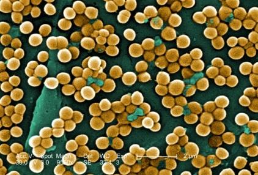
تصویر 1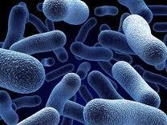
تصویر 2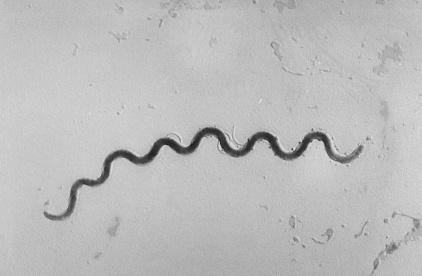
تصویر 3ترکیب تقریبی سلول باکتری ۷۰٪ آب و ۳۰٪ وزن خشک است. ترکیب وزن خشک بهصورت زیر ذکر شده است:
لازم نیست این اعداد حفظ شوند؛ کافی است بدانیم این ترکیبات در باکتری حضور دارند.
| بخش یا ترکیب | مقدار تقریبی ذکرشده |
|---|---|
| آب | ۷۰٪ سلول |
| وزن خشک | ۳۰٪ سلول |
| پروتئین، از جمله ریبوزومها، آنزیمها و ساختارهای سطحی | حدود ۷۰٪ وزن خشک |
| RNA | ۱۲٪ وزن خشک |
| چربی | ۶٪ وزن خشک |
| پلیساکارید | ۵٪ وزن خشک |
| فسفولیپید | ۴٪ وزن خشک |
| DNA | ۳٪ وزن خشک |
در سه جلسهٔ مربوط به ساختار باکتریها، بررسی از مرکز باکتری آغاز میشود و لایهبهلایه به بیرون میرسد. برای توضیح این روند از مثال تخممرغ آبپز استفاده میشود. باکتری پروکاریوت است و هسته ندارد؛ بنابراین، تخممرغ را نباید از جهت داشتن زرده و هسته با باکتری یکی دانست. باکتری هسته ندارد، اما لایههای تخممرغ ــ بهجز این تفاوت ــ برای تصور لایههای باکتری مثال مناسبیاند. ابتدا محتویات داخلی و سپس لایههای بیرونی بررسی میشوند.
 تصویر 7
تصویر 7
ساختارهای باکتری به اصلی و فرعی تقسیم میشوند.
ساختارهای اصلی:
ساختارهای فرعی:
| گروه ساختاری | اجزا |
|---|---|
| اصلی | مادهٔ وراثتی یا CHROMOSOME؛ سیتوپلاسم (CYTOPLASM)؛ غشای سیتوپلاسمی (CELL MEMBRANE)؛ مزوزوم (MEZOSOME)؛ دیوارهٔ سلولی (CELL WALL) |
| فرعی | کپسول (CAPSULE)؛ فلاژل/تاژک (FLAGELLA)؛ پیلی/فیمبریا (PILLUS)؛ اسپور (SPORE) |
بسیاری از باکتریها ممکن است کپسول، فلاژل، پیلی یا اسپور داشته باشند یا نداشته باشند. تقریباً همهٔ باکتریها ساختارهای اصلی را دارند، بهجز دیوارهٔ سلولی که حدود سه خانوادهٔ باکتریایی فاقد آن هستند. از شناختهشدهترین باکتریهای بیماریزای فاقد دیواره، مایکوپلاسماها هستند.
در سیتوپلاسم DNA، RNA، ریبوزومها، پروتئینها و مواد دیگر وجود دارند. باکتری مانند سلول یوکاریوتی هسته ندارد، اما DNA آن در ناحیهای متراکم و فشرده قرار میگیرد که نوکلئوئید (nucleoid)، یعنی شبههسته، نام دارد.
میتوان DNA حلقوی را به تسبیحی حلقهشده تشبیه کرد که داخل سیتوپلاسم درهمپیچیده و فشرده است. شکل شماتیک باکتری در حال رشد یا استراحت، پیش از ورود به تقسیم، نوکلئوئید را نشان میدهد. هنگام تقسیم، همانندسازی (replication) و دوبرابرشدن DNA و حرکت آن به دو قطب باکتری رخ میدهد. در توضیح درس، این وضعیت بهطور تقریبی با تشکیل سانترومر در سلول یوکاریوتی مقایسه شده است. در حالت معمول، DNA دورشتهای باکتری در جایگاهی از سیتوپلاسم قرار دارد.
پروکاریوتها ساختار هسته ندارند و DNA خود را در نوکلئوئید بستهبندی میکنند. نوکلئوئید اغلب باکتریها حاوی یک DNA منفرد و حلقوی با طول تقریبی ۱ میلیمتر است. شمار ژنها در پروکاریوتها از ۴۶۸ ژن در (Mycoplasma genitalium)مایکوپلاسما ژنیتالوم که کوچکترین DNA را دارد و استرپتو مایسس کویلی کالر (Streptomyces coelicolor) تعداد 7825 ژن در DNA خود دارد؛ نام جنس Streptomyces و نام گونهٔ نمونه Streptomyces coelicolor است.
کوچکترین DNA مربوط به مایکوپلاسما (Mycoplasma) و بزرگترین DNA مربوط به استرپتومایسس کویلی کالر Streptomyces coelicolor است. DNA باکتریها، برخلاف DNA یوکاریوتها، بهشکل کروموزوم مجزای آشکار دیده نمیشود و بهصورت شبکهٔ منتشر کروماتینی باقی میماند. جزئیات ژنتیک باکتریها، جهشها و نقش آنها در مقاومت آنتیبیوتیکی و طراحی داروها در مبحث ژنتیک مطرح میشود. مواد ضدمیکروبی (antimicrobial agents) شامل آنتیبیوتیکها و ترکیباتی مانند فنولها نیز بررسی میشوند.
علاوه بر DNA کروموزومی، عناصر خارجکروموزومی از جنس DNA و گاهی RNA وجود دارند که منشأ آنها خود کروموزوم نیست و جزو ژنوم باکتری بهشمار نمیروند. پلاسمیدها شناختهشدهترین این عناصرند؛ در سیتوپلاسم شناورند و میتوانند خطی یا حلقوی باشند.
پلاسمیدها در ژندرمانی و تولید داروها کاربرد دارند. ژندرمانیهای مبتنی بر پلاسمید به پلاسمیدهایی متکیاند که نخست از باکتریها گرفته شدند. جزئیات پلاسمیدها پس از میانترم مطرح خواهد شد.
| ویژگی | توضیح |
|---|---|
| عناصر خارجکروموزومی | از جنس DNA و گاهی RNA؛ منشأ آنها خود کروموزوم نیست و جزو ژنوم باکتری بهشمار نمیروند |
| پلاسمیدها | شناختهشدهترین عناصر خارجکروموزومی؛ در سیتوپلاسم شناور و خطی یا حلقوی |
| کاربرد پلاسمیدها | ژندرمانی و تولید داروها؛ ژندرمانیهای مبتنی بر پلاسمید به پلاسمیدهایی متکیاند که نخست از باکتریها گرفته شدند |
ریبوزوم باکتری ضریب رسوبی 70S دارد و از زیرواحدهای 30S و 50S تشکیل شده است. ریبوزومهای پروکاریوتی و یوکاریوتی در سیتوپلاسم آزادند.
ریبوزوم باکتری از روی mRNA پروتئین تولید میکند.
| بخش ریبوزوم باکتری | اجزای ذکرشده |
|---|---|
| ریبوزوم کامل | ضریب رسوبی 70S |
| زیرواحد 30S | ۲۱ پروتئین و RNA مربوط به 16S |
| زیرواحد 50S | ۳۴ پروتئین و RNAهای 23S و 5S |
| کارکرد | تولید پروتئین از روی mRNA |
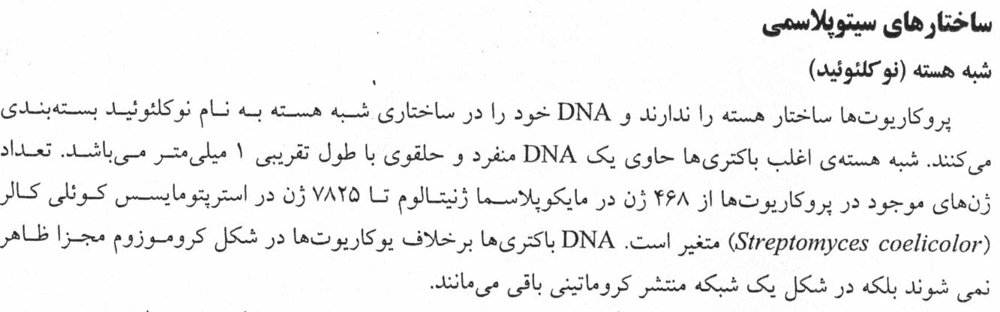
تصویر 8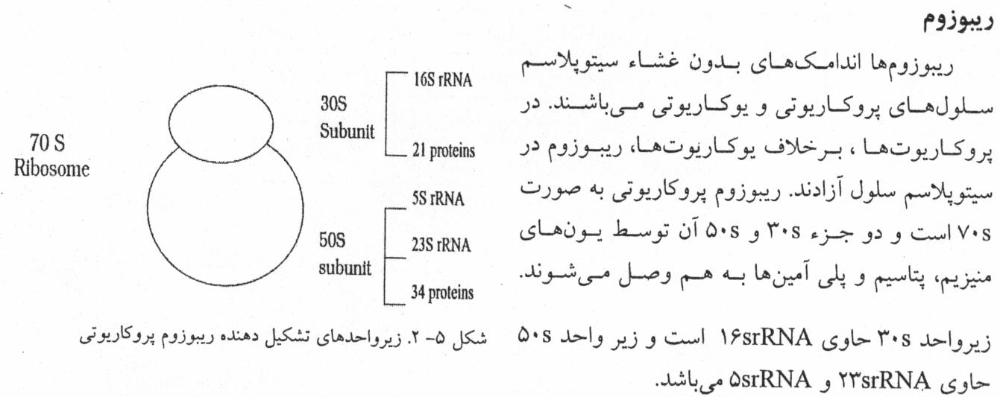
تصویر 9در شکلهای شماتیک، فلاژل اندام حرکتی باکتری و فیمبریا یا پیلی (fimbria/pilus) اندام اتصال آن است.
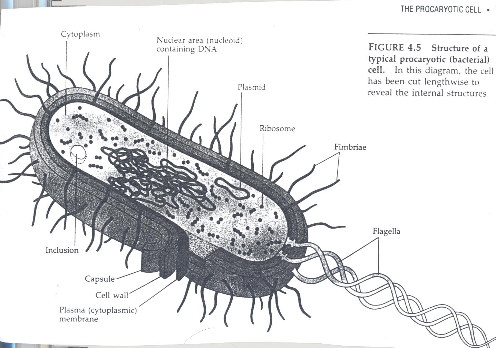
پیلی به اتصال باکتری به سطح، بهویژه در سطوحی که جریان وجود دارد، کمک میکند و از عوامل بیماریزایی است. برای نمونه، بعضی باکتریها وارد مجاری ادرار میشوند، اما نمیتوانند عفونت ایجاد کنند؛ اتصال به کمک پیلی میتواند استقرار باکتری را تسهیل و بیماریزایی را افزایش دهد.
فلاژل اندام حرکتی است، اما در توضیح درس گفته شد که حرکت باکتری به کمک آن معمولاً مزیت بیماریزایی عمدهای در بدن ندارد: بافتها غالباً جامدند و در مایعاتی مانند خون، ادرار و CSF، خود مایع جریان دارد. در مقایسهٔ پیلی و فلاژل از نظر افزایش pathogenicity، پیلی اهمیت بیشتری دارد. پیلی با اتصال به دیوارهٔ عروق، یورترا یا مثانه مانع شستهشدن و دفع باکتری میشود و به استقرار و colonization، یعنی اتصال و مستقرشدن، کمک میکند.
| ساختار | نقش یا توضیح در درس |
|---|---|
| پیلی/فیمبریا (fimbria/pilus) | اندام اتصال؛ کمک به اتصال به سطح و استقرار باکتری، بهویژه در سطوحی که جریان وجود دارد |
| فلاژل | اندام حرکتی؛ حرکت آن در بدن معمولاً مزیت بیماریزایی عمدهای ندارد، چون بافتها غالباً جامدند و در مایعاتی مانند خون، ادرار و CSF خود مایع جریان دارد |
^دمتگرم که داری با قدرت میخونی :) اینجا یه نکته ای باید اضافه کنم که طبق حرف استاد سه گرانول PHB ،متاکروماتیک و دانه های پلی ساکاریدی مهمه و توی امتحان میاد ولی بهتره همه گرانول هارو بلد باشید^
در سیتوپلاسم ممکن است گرانولهایی وجود داشته باشند که هم از نظر میکروبشناسی عمومی اهمیت دارند و هم گاهی در تشخیص کمک میکنند.
دانههای متاکروماتیک در باکتریهایی مانند Corynebacterium و Mycobacterium tuberculosis دیده میشوند. متاکروماتیک یعنی دانه رنگی متفاوت از رنگ زمینه میگیرد؛ برای نمونه، باکتری گرممثبت ممکن است بنفش دیده شود و دانهای صورتیرنگ در سیتوپلاسم داشته باشد.
این دانهها تجمع فسفاتاند و گاهی در قطب باکتری دیده میشوند. در تصویر، باسیل گرممثبتی نشان داده شده که در یکی از قطبهای آن دانهای متاکروماتیک با ظاهری متورم و متفاوت از بقیهٔ سلول دیده میشود. این دانهها را دانههای ولوتین، دانههای Babes-Ernst و دانههای قطبی نیز مینامند.
رنگ آنها به روش رنگآمیزی بستگی دارد. با روش Albert، رنگهایی مانند toluidine blue یا methylene blue ممکن است قرمز دیده شوند و با رنگآمیزی Neisser نیز قابلردیابیاند. دانههای متاکروماتیک اغلب در انتهای فاز رشد لگاریتمی دیده میشوند. نمونههای ذکرشده Corynebacterium و Mycobacterium tuberculosis هستند.
| ویژگی دانههای متاکروماتیک | توضیح |
|---|---|
| ماهیت | تجمع فسفات |
| جایگاه | گاهی در قطب باکتری |
| نامهای دیگر | دانههای ولوتین، Babes-Ernst و دانههای قطبی |
| زمان مشاهدهٔ رایج | اغلب در انتهای فاز رشد لگاریتمی |
| رنگآمیزیهای ذکرشده | Albert، toluidine blue، methylene blue و Neisser |
| نمونهها | Corynebacterium و Mycobacterium tuberculosis |
بعضی باکتریها گرانولهای پلیساکاریدی گلیکوژنی یا گلوسیدی دارند. برای ردیابی آنها از ید استفاده میشود؛ ید گلیکوژن را قهوهای میکند. در برخی باکتریها، از جمله انتروباکتریاسه، میتوان پس از رنگآمیزی یک قطره محلول لوگول حاوی ید افزود و قهوهایشدن دانهها را بهعنوان نشانهٔ گلیکوژنیبودن آنها مشاهده کرد.
گرانولهای پلیبتاهیدروکسیبوتیریک اسید (PHB) ذخیرهٔ کربناند. وقتی کربن محیط فراوان و نیتروژن یا مواد دیگر کم باشد، باکتری کربن را بهشکل PHB ذخیره میکند. این گرانولها ماهیت لیپیدی دارند و با Sudan Black سیاه میشوند؛ ممکن است در رنگآمیزی گرم با اسپور اشتباه شوند. در نمونهبرداری از کلونی و رنگآمیزی با Sudan Black، محل گرانول درون باکتری تیره دیده میشود.
باکتریهای ذکرشده شامل Pseudomonas، Pseudomonas aeruginosa، Bacillus، Legionella و Burkholderia هستند. اسلاید نیز به PHB در تصویر TEM از مقطع نازک باکتری در حال تقسیم P. mandelii اشاره میکند.
| ویژگی | اطلاعات ذکرشده |
|---|---|
| نقش PHB | ذخیرهٔ کربن |
| شرایط ذخیرهسازی | کربن محیط فراوان و نیتروژن یا مواد دیگر کم |
| ماهیت گرانول | لیپیدی |
| رنگآمیزی | Sudan Black؛ گرانول سیاه میشود |
| نکتهٔ تشخیصی | ممکن است در رنگآمیزی گرم با اسپور اشتباه شود |
| باکتریهای ذکرشده | Pseudomonas، Pseudomonas aeruginosa، Bacillus، Legionella و Burkholderia |
| مورد تصویر اسلاید | PHB در تصویر TEM از مقطع نازک باکتری در حال تقسیم P. mandelii |
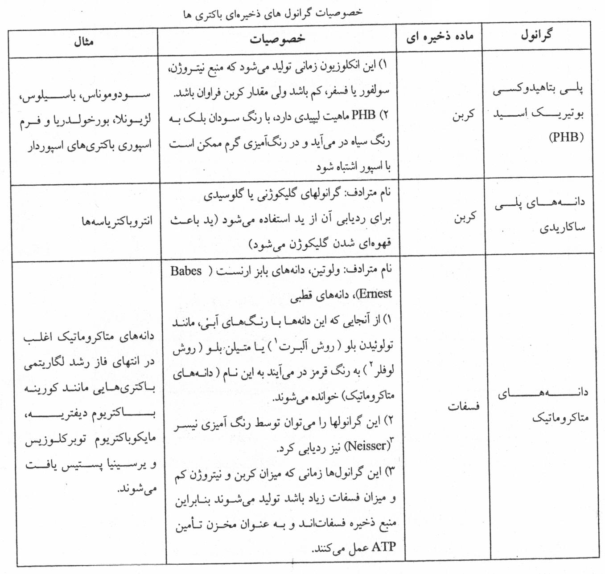
تصویر 10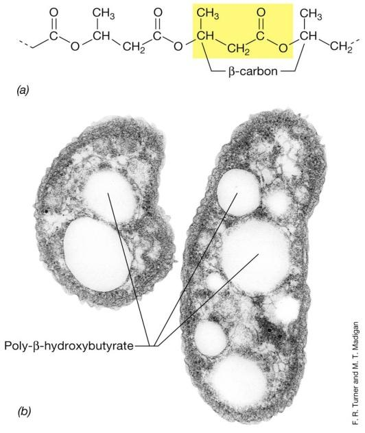
تصویر 11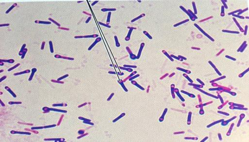
تصویر 12در باکتریهای محیطی، از جمله گونههای غیر بیماریزا، مگنتوزومها، گرانولهای سولفوری، کربوکسیزومها و واکوئلهای گازی نیز دیده میشوند.
در گفتار، برای توضیح جذب آهن به سیدروفور (siderophore) اشاره شد. سیدروفورها مولکولهایی هستند که باکتری ترشح میکند؛ آنها به آهن متصل میشوند و به انتقال آن بهسمت سلول و جذب آهن کمک میکنند.
در طبیعت، بعضی باکتریهای مصرفکنندهٔ آهن مگنتوزوم تولید میکنند. این گرانولهای آهنی شامل Fe₃O₄ هستند و غشایی حاوی فسفولیپید، پروتئین و گلیکوپروتئین آنها را احاطه میکند. مگنتوزومها خاصیت مغناطیسی و magnetotaxis را ایجاد میکنند و به باکتری در جهتیابی بهسمت آهن کمک میکنند.
در گفتار، magnetotaxis بهمعنای حرکت مرتبط با میدان مغناطیسی توضیح داده شد و با موارد زیر مقایسه شد:
| واژه | توضیح در درس |
|---|---|
| magnetotaxis | حرکت مرتبط با میدان مغناطیسی؛ در درس با جهتیابی بهسمت آهن مرتبط شده است |
| aerotaxis | حرکت بهسمت هوا و اکسیژن |
| chemotaxis | حرکت بهسمت مواد شیمیایی |
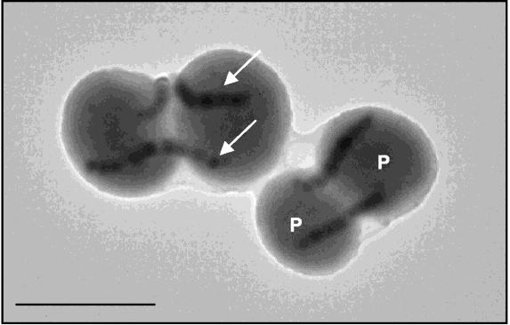
تصویر 13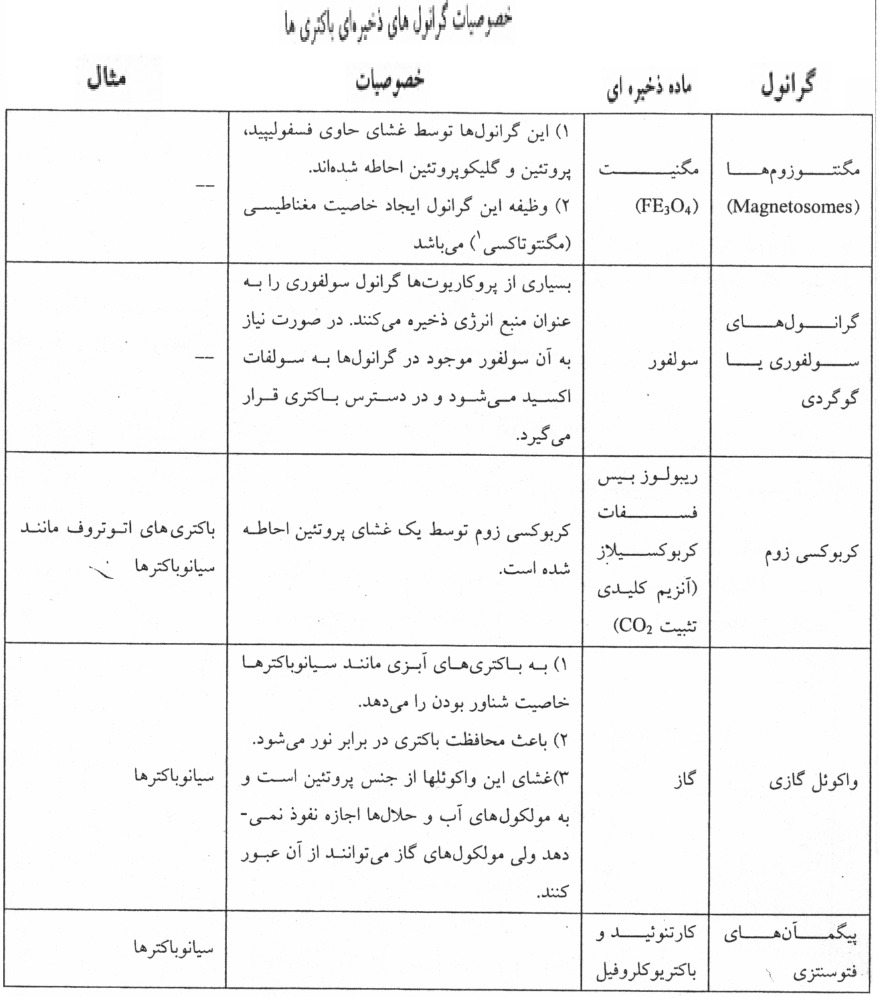
تصویر 14بسیاری از پروکاریوتها گرانول سولفوری را بهعنوان منبع انرژی ذخیره میکنند. در صورت نیاز، سولفور موجود در گرانول به سولفات اکسید میشود و در دسترس باکتری قرار میگیرد.
کربوکسیزومها پوششی پروتئینی دارند و در باکتریهای اتوتروف مانند سیانوباکترها دیده میشوند. آنها حاوی آنزیم ریبولوز ۱،۵-بیسفسفات کربوکسیلاز هستند که CO₂ را تثبیت میکند. در نمودار اسلاید، carbonic anhydrase و تبدیل PGA به phosphoglycolate نیز نشان داده شده و این واکنش بهعنوان wasteful side reaction معرفی شده است.
| ساختار | ویژگی و کارکرد ذکرشده |
|---|---|
| گرانول سولفوری | منبع انرژی ذخیرهای؛ سولفور آن در صورت نیاز به سولفات اکسید میشود و در دسترس باکتری قرار میگیرد |
| کربوکسیزوم | پوشش پروتئینی دارد؛ در باکتریهای اتوتروف مانند سیانوباکترها دیده میشود؛ حاوی ریبولوز ۱،۵-بیسفسفات کربوکسیلاز برای تثبیت CO₂ است |
| موارد نمودار اسلاید | carbonic anhydrase، تبدیل PGA به phosphoglycolate و معرفی این واکنش بهعنوان wasteful side reaction |
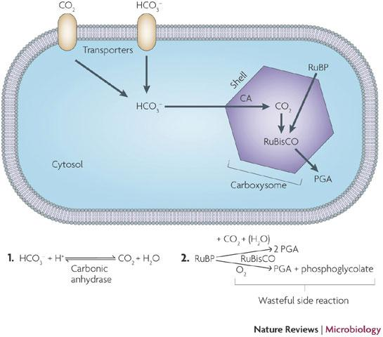
تصویر 15واکوئلهای گازی در بعضی باکتریهای آبزی، از جمله سیانوباکترها، به شناورماندن کمک میکنند تا باکتری رسوب نکند و به اعماق دریا نرود. این واکوئلها از نور نیز محافظت میکنند. غشای آنها پروتئینی است و به مولکولهای آب و حلالها اجازهٔ نفوذ نمیدهد، اما گازها میتوانند از آن عبور کنند.
در گفتار، این ساختارها برای سیانوباکترهای سطحزی که فتوسنتز میکنند مهم دانسته شدند. در مقابل، باکتریهای barophilic فشار زیاد را ترجیح میدهند و میتوانند در اعماق دریا، جایی که موجودات دریازی زندگی میکنند، حضور داشته باشند و آنها را تجزیه کنند. همهٔ باکتریها توان زندگی در اعماق دریا را ندارند و برای آن به ویژگیهای ساختاری مناسب نیاز است.
| ساختار یا گروه | ویژگیهای ذکرشده |
|---|---|
| واکوئل گازی | در بعضی باکتریهای آبزی، از جمله سیانوباکترها؛ کمک به شناورماندن و نرفتن به اعماق؛ محافظت از نور؛ غشای پروتئینی که آب و حلالها از آن عبور نمیکنند، اما گازها عبور میکنند |
| سیانوباکترهای سطحزی | فتوسنتز میکنند؛ واکوئلهای گازی برایشان مهم دانسته شده است |
| باکتریهای barophilic | فشار زیاد را ترجیح میدهند و میتوانند در اعماق دریا حضور داشته باشند و موجودات دریازی را تجزیه کنند |
| زندگی در اعماق دریا | همهٔ باکتریها توان آن را ندارند و به ویژگیهای ساختاری مناسب نیاز است |
اهمیت ساختارهای باکتریهای محیطی تنها به میکروبشناسی غیرپزشکی محدود نیست؛ مرز میکروبشناسی پزشکی، محیطی، غذایی و صنعتی در عمل کمرنگ شده است. از ترکیب یک باکتری محیطی ممکن است داروی ضدسرطان تولید شود یا از آنزیم آن بهعنوان کیت تشخیصی استفاده شود.
DNA پلیمراز مورد استفاده در PCR از باکتری Thermus aquaticus گرفته شده است. این آنزیم thermostable است و دمای بالا را تحمل میکند، درحالیکه پلیمرازهای دیگر جایگزین آن نمیشوند.
در روایت درس، Kary Mullis، بیوشیمیستی که برندهٔ جایزهٔ نوبل شد، هنگام رانندگی بهسمت خانه در کالیفرنیا کنار چشمههای آب گرم و گوگردی توقف کرد. آب زردرنگ و در حال جوشیدن بود و میدانستند Thermus aquaticus در آنجا رشد میکند و سبب رسوب گوگرد و زردشدن سنگها میشود. او به این فکر افتاد که باکتریای که دمای حدود ۹۵ درجه را تحمل میکند باید آنزیم مقاوم به دما داشته باشد؛ نمونهای از سنگ برداشت، باکتری را جدا کرد و DNA پلیمراز آن را استخراج کرد. آنزیم حاصل در PCR بهکار رفت و در مسیر رسیدن او به جایزهٔ نوبل نقش داشت. Taq از Thermus aquaticus گرفته شده است؛ Thermus نام جنس و aquaticus نام گونه است. PCR در تشخیص بیماریهای مختلف، از جمله بیماریهای ژنتیکی و هماتولوژیک، کاربرد دارد.
| مورد | توضیح |
|---|---|
| باکتری منبع | Thermus aquaticus |
| آنزیم | DNA پلیمراز مورد استفاده در PCR؛ thermostable و مقاوم به دمای بالا |
| نام Taq | از Thermus aquaticus؛ Thermus نام جنس و aquaticus نام گونه است |
| روایت درس | Kary Mullis باکتری را از نمونهٔ سنگ کنار چشمههای آب گرم و گوگردی جدا کرد و DNA پلیمراز آن را استخراج کرد |
| کاربرد PCR ذکرشده | تشخیص بیماریهای مختلف، از جمله بیماریهای ژنتیکی و هماتولوژیک |
نمونهٔ دیگری از میکروبشناسی صنعتی، جداسازی باکتریای برای تجزیهٔ ترکیبات پساب کارخانههای ریسندگی است. دکتر پوربابایی، که در میکروبشناسی صنعتی و بیوتکنولوژی میکروبی کار کردهاند، چنین باکتریای را جدا کرده و کاربرد آن را ثبت اختراع کردهاند.
کارخانههایی که پسابشان در مناطقی مانند یزد و هرمزگان آلودگی شیمیایی ایجاد میکرد، میتوانند پساب را به استخری هدایت کنند که باکتریها بهطور مداوم به آن افزوده میشوند. پساب چند روز در استخر میماند تا باکتریها مواد مضر را تجزیه کنند و سپس وارد محیط میشود. برای افزایش سرعت تکثیر، تغییرات ژنتیکی ایجاد و سویه ارتقا داده شده است. این کار هم آلودگی را کاهش میدهد و هم کاربرد تجاری دارد. میکروبشناسی محیطی و غذایی زمینهٔ کار فراوانی دارد.
گرانول ساختاری درون سیتوپلاسم یک باکتری است، اما پیگمان یا رنگدانهای که در کلونی دیده میشود، رنگ تجمعی باکتریهاست و با گرانول اشتباه نمیشود. سه پدیدهٔ رنگی از هم متمایزند:
دو مورد اخیر با چشم و بهصورت ماکروسکوپی دیده میشوند و میتوانند در تشخیص کمک کنند.
| پدیدهٔ رنگی | محل یا منشأ و شیوهٔ مشاهده |
|---|---|
| رنگ باکتری منفرد | میتواند ناشی از گرانولهای درونسیتوپلاسمی باشد و زیر میکروسکوپ دیده شود |
| رنگ کلونی | رنگ مجموعهٔ باکتریها؛ ماکروسکوپی |
| پیگمان ترشحشده | ترشح میشود و محیط کشت را تغییر رنگ میدهد؛ ماکروسکوپی |
رنگدانهها و نمونههای اسلاید عبارتاند از:
| رنگ یا ویژگی رنگی | نمونه یا رنگدانهٔ ذکرشده |
|---|---|
| قرمز | Serratia marcescens؛ prodigiosin |
| بنفش | Bacillus violaceus |
| نارنجی یا زرد | Staphylococcus aureus، Sarcina نارنجی یا زرد و برخی Mycobacteriumها، از جمله نمونههای منتسب به سل یا جذام؛ نام phitocol در اسلاید |
| صورتی | Bacillus subtilis |
| سیاه | Bacillus mesentericus |
| سبز فلورسانس زیر UV | fluorescein یا pyoverdin؛ برای Pseudomonas aeruginosa و Bacillus fluorescens putidus ذکر شده است |
| آبیِ غیرفلورسانس | pyocyanin؛ تولیدشده توسط Pseudomonas aeruginosa |
Pseudomonas aeruginosa میتواند pyoverdin و pyocyanin تولید کند. وقتی کلونی یا محیط کشت آن در معرض UV قرار بگیرد، pyoverdin رنگ سبز فلورسانس نشان میدهد؛ pyocyanin بدون تابش UV هم آبی است. در گفتار گفته شد خود Pseudomonas aeruginosa نیز رنگ سبز دارد و تقریباً بوی یاس میدهد.
برای نمونه، در کشت تنفسی فرد مبتلا به cystic fibrosis ممکن است پس از حدود ۲۴ ساعت محیط آبی دیده شود و زیر UV سبز فلورسانس نشان دهد. این ویژگیها سرنخ تشخیصیاند، اما جای تستهای تأییدی را نمیگیرند. تجربهٔ مشاهدهٔ کلونی و پلیت به تشخیص جهت میدهد، ولی تشخیص قطعی نباید فقط بر آن استوار باشد؛ این ویژگیها مشخص میکنند کدام تستهای افتراقی را انجام دهیم.
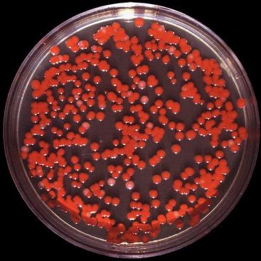
تصویر 16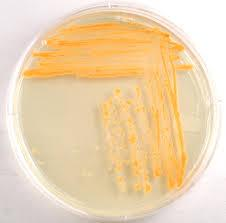
تصویر 17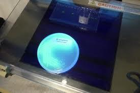
تصویر 18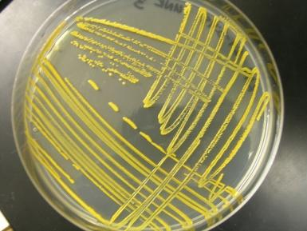
تصویر 19لایهٔ بیرونیتر سیتوپلاسم، غشای سیتوپلاسمی یا غشای سیتوپلاسمیک (cytoplasmic membrane) است. برای تصور جایگاه آن، از لایهٔ نازک روی سفیدهٔ تخممرغ آبپز، زیر پوسته، مثال زده شد. غشای باکتری ساختاری دولایهٔ لیپیدی دارد و میان سیتوپلاسم و لایههای بیرونی قرار گرفته است؛ دیوارهٔ سلولی در خارج غشا قرار دارد.
مجموعهٔ غشای سیتوپلاسمی و لایههای خارج از آن را پوشش سلولی مینامند. این پوشش مجموعهٔ ساختارهایی است که پروتوپلاست سلول را احاطه میکند.
غشای سیتوپلاسمی باکتری از نظر کلی ساختاری دولایه دارد، اما برخلاف غشای بسیاری از یوکاریوتها فاقد استروئید است، بهجز در Mycoplasma. حدود ۷۰٪ آن پروتئین، ۲۰ تا ۳۰٪ لیپید و مقدار کمی کربوهیدرات است. فسفولیپیدهای غالب پروکاریوتها فسفاتیدیل اتانولآمین (حدود ۷۵٪) و سپس فسفاتیدیل گلیسرول (حدود ۲۰٪) ذکر شدهاند.
غشای فسفولیپوپروتئینی خاصیت جذب انتخابی دارد و به حفظ فشار اسمزی درون سلول در حد معین کمک میکند؛ چربیهای غشا نیز در این ویژگی نقش دارند.
| ویژگی یا ترکیب غشا | توضیح |
|---|---|
| ساختار کلی | دولایه |
| استروئید | غشای بسیاری از یوکاریوتها را ندارد؛ استثنای ذکرشده Mycoplasma است |
| ترکیب تقریبی | حدود ۷۰٪ پروتئین، ۲۰ تا ۳۰٪ لیپید و مقدار کمی کربوهیدرات |
| فسفولیپید غالب | فسفاتیدیل اتانولآمین، حدود ۷۵٪ |
| فسفولیپید بعدی | فسفاتیـدیل گلیسرول، حدود ۲۰٪ |
| خاصیت ذکرشده | جذب انتخابی و کمک به حفظ فشار اسمزی درون سلول در حد معین؛ چربیهای غشا نیز نقش دارند |
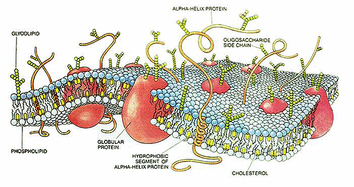
تصویر 20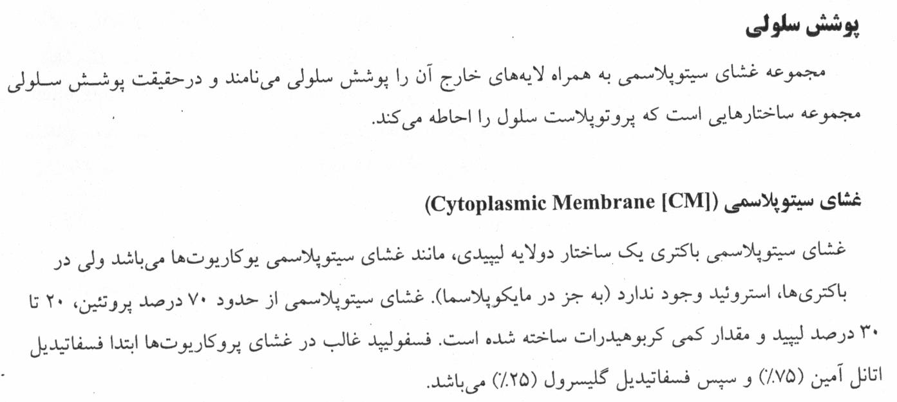
تصویر 21از نقشهای غشای سیتوپلاسمی میتوان به موارد زیر اشاره کرد:
پرمئازها از جمله آنزیمهای مسئول جذب مواد از محیط رقیقتر به داخل سلول غلیظترند. غشای باکتری محل تولید ATP است. در گفتار، این نقش با تولید ATP در سلولهای یوکاریوتی مقایسه شد و گفته شد این نقش در سلولهای یوکاریوتی به این شکل مشاهده نمیشود.
| نقش یا ویژگی غشای سیتوپلاسمی | توضیح |
|---|---|
| انتقال مواد | نفوذپذیری انتخابی، تنظیم ورود و خروج مواد و انتقال مایعات |
| انتقال مواد به درون سلول | پرمئازها از جمله آنزیمهای مسئول جذب مواد از محیط رقیقتر به داخل سلول غلیظترند |
| تنفس و انرژی | انتقال الکترون، واکنشهای فسفریلاسیون اکسیداتیو در باکتریهای هوازی و تولید ATP |
| ترشح | ترشح آنزیمهای هیدرولیزکننده به خارج |
| بیوسنتز | داشتن آنزیمها و مولکولهای حامل دخیل در بیوسنتز DNA، پلیمرهای دیوارهٔ سلولی و چربیهای غشا |
| پاسخ به محیط | داشتن گیرندهها و پروتئینهای مرتبط با chemotaxis و حرکت در پاسخ به عوامل محیطی |
ساختارهای پوشش سلولی و ترکیبات سازندهٔ آنها در اسلاید چنین آمدهاند:
| ساختار پوشش سلولی | ترکیب یا ویژگی ذکرشده |
|---|---|
| غشای پلاسمایی | فسفولیپیدها، پروتئینها و آنزیمهای شرکتکننده در تولید انرژی پتانسیل غشایی و انتقال |
| پپتیدوگلیکان | زنجیرههای گلیکان حاوی GlcNAc و MurNAc، با پلهای پپتیدی دارای اتصال متقاطع |
| اسیدهای تایکوئیک | پلیریبیتولفسفات یا گلیسرولفسفات؛ مرتبط با پپتیدوگلیکان |
| اسید لیپوتایکوئیک | متصل به لیپید |
| فضای پریپلاسمی | آنزیمهای دخیل در انتقال، تجزیه و سنتز |
| غشای خارجی باکتریهای گرممنفی | فسفولیپیدها همراه با اسیدهای چرب اشباعشده؛ پورینها، لیپوپروتئینها و پروتئینهای انتقالی |
| LPS | ساکارید مرکزی و آنتیژن O |
| کپسول | پلیساکاریدها، از جمله دیساکاریدها و تریساکاریدها |
پپتیدوگلیکان باکتریهای گرممنفی نازکتر از پپتیدوگلیکان گرممثبتهاست. غشای سیتوپلاسمی در باکتریهای گرممثبت و گرممنفی ساختار کلی مشابهی دارد، اما لایهٔ بیرونی دیوارهٔ سلولی در این دو گروه متفاوت است.
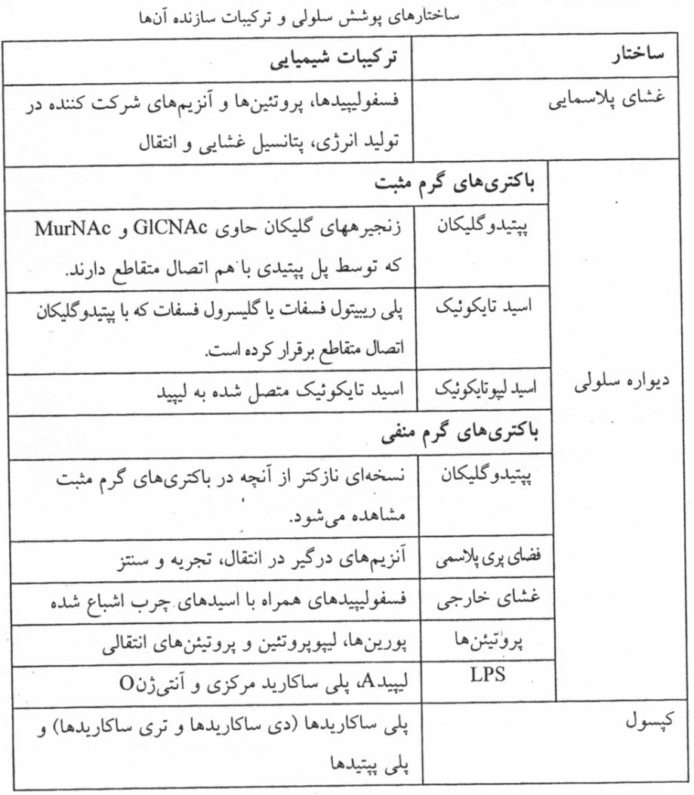
تصویر 22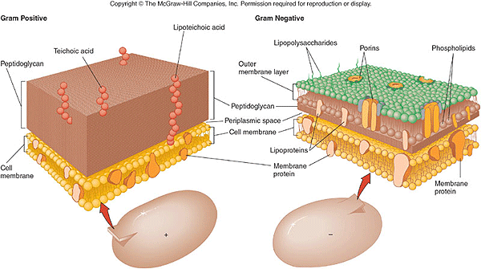
تصویر 23پیش از بحث دیواره، چینخوردگیهایی از غشای سیتوپلاسمی به داخل سیتوپلاسم معرفی میشوند که مزوزوم (mesosome) نام دارند. در اسلاید، این چینخوردگیها در گروههای مختلف باکتریایی، بهویژه در محل تولید دیوارهٔ سلولی، توصیف شدهاند و فعالیت تنفس سلولی و تولید دیواره به آنها نسبت داده شده است.
غشای سلولی از نظر فعالیت تنفسی میتواند معادل لایهٔ داخلی میتوکندری عمل کند.
در گفتار نیز مزوزومها بهصورت چینخوردگیهای لترال یا جانبی و چینخوردگیهای عمیقتر توصیف شدند. اگر فرورفتگیهای عمیق روبهروی هم باشند، مزوزوم سپتال نام دارند. هنگام تقسیم دوتایی، با رشد باکتری دیواره بهسمت مرکز پیش میرود و دو مزوزوم سپتال به هم میرسند تا باکتری به دو قسمت تقسیم شود. چینخوردگیهای جانبی محل فعالیت تنفس سلولی دانسته شدند؛ باکتریها میتوکندری ندارند و تنفس سلولی و آنزیمهای فسفریلاسیون اکسیداتیو در چینخوردگیهای جانبی و غشای سیتوپلاسمی مطرح شدند.
| نوع مزوزوم | نقشهای نسبتدادهشده در اسلاید و گفتار |
|---|---|
| سپتال (septal) | ساخت دیوارهٔ جداکنندهٔ دو سلول متصل هنگام تقسیم؛ اتصال به DNA باکتری؛ رسیدن دو چینخوردگی روبهرو به هم هنگام تقسیم دوتایی و تقسیم باکتری به دو قسمت |
| جانبی (lateral) | تنفس سلولی؛ ترشح پروتئینهای خارجسلولی؛ جایگاه آنزیمهای فسفریلاسیون اکسیداتیو |
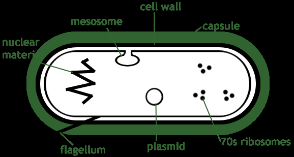
تصویر 24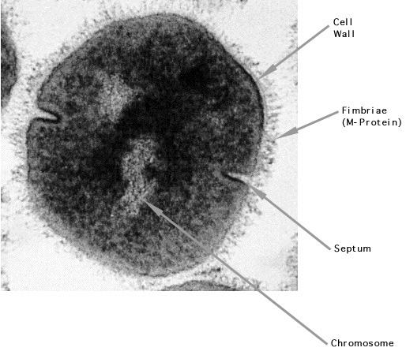
تصویر 25قبل از هر چیز اشاره کنم بخش سیستم های انتقالی طبق گفته استاد برای امتحان مورد پرسش قرار نمیگیرد :) غشای سیتوپلاسمی مسیرهای انتقال مواد را نیز در بر دارد. اسلاید انتقال ساده، انتقال وابسته به یون، انتقال فعال و انتقال گروهی را معرفی میکند. در گفتار گفته شد این اسلاید برای یادآوری انتشار ساده، انتشار تسهیلشده، انتقال وابسته به ATP، انتقال یونها و انتقال گروهی است و برای این بخش قرار نیست سؤال امتحانی داده شود.
انتقال وابسته به پروتئینهای اتصالدهنده با نامهای مترادف ABC Transporter و ATP Binding cassette معرفی شده است. این سیستم از ATP یا مواد فسفاتدار پرانرژی استفاده میکند و در اسلاید بهعنوان انتقال فعال اولیه آمده است.
کارکرد آن به یکپارچگی غشای خارجی وابسته است. سوبسترا به پروتئینهای اتصالدهندهای ارائه میشود که در گرممنفیها در فضای پریپلاسمی و در گرممثبتها در سطح خارجی سلول قرار دارند. پرمئازهای هیدروفیلیک، سوبسترا را از کمپلکس پروتئین اتصالدهنده ـ سوبسترا میگیرند و کانالی برای عبور آن از غشا فراهم میکنند. ATPase هیدروفیلیک متصل به غشا برای تغییر شکل پرمئاز ATP مصرف میکند.
برای انتقال هر مولکول سوبسترا، دو ATP ذکر شده است: یکی برای تغییر شکل پرمئاز و دیگری برای فسفریلهکردن سوبسترا. نمونهها و کاربردهای ذکرشده عبارتاند از:
سیستمهای مشابهی در باکتریهای گرممثبت، از جمله Pneumococcus و Bacillus، نیز ذکر شدهاند.
| ویژگی ABC Transporter | اطلاعات ذکرشده |
|---|---|
| نامهای مترادف | ABC Transporter؛ ATP Binding cassette |
| منبع انرژی و طبقهبندی | ATP یا مواد فسفاتدار پرانرژی؛ انتقال فعال اولیه |
| پروتئین اتصالدهنده | در گرممنفیها در فضای پریپلاسمی؛ در گرممثبتها در سطح خارجی سلول |
| پرمئاز | سوبسترا را از کمپلکس پروتئین اتصالدهنده ـ سوبسترا میگیرد و کانال عبور از غشا فراهم میکند |
| ATPase | هیدروفیلیک و متصل به غشا؛ برای تغییر شکل پرمئاز ATP مصرف میکند |
| مصرف انرژی ذکرشده | دو ATP برای هر مولکول سوبسترا: یکی برای تغییر شکل پرمئاز و دیگری برای فسفریلهکردن سوبسترا |
| نمونهها و کاربردها | ورود هیستیدین؛ انتقال ATP/ADP translocase در Rickettsia و Chlamydia؛ انتقال اغلب مواد غذایی در گرممنفیها |
| نمونههای گرممثبت | سیستمهای مشابه در Pneumococcus و Bacillus |
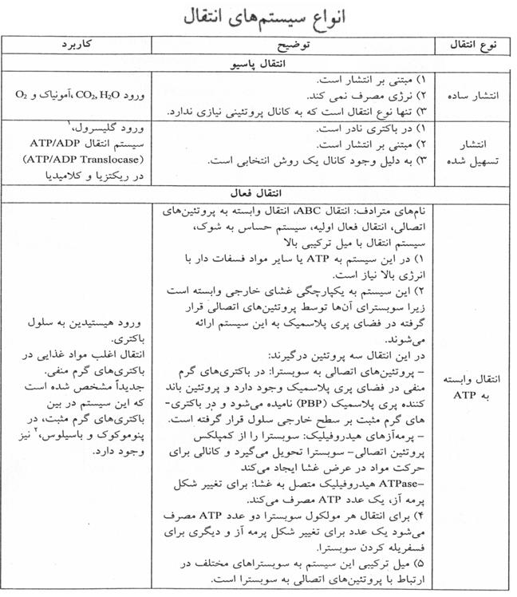
تصویر 26انتقال وابسته به یون، انتقال chemiosmotic یا انتقال فعال ثانویه نامیده میشود. منبع انرژی آن نیروی محرکهٔ پروتون (PMF) و در باکتریهای هالوفیل، نیروی محرکهٔ سدیم است.
سه نوع آن در اسلاید آمده است:
| نوع انتقال وابسته به یون | توصیف اسلاید |
|---|---|
| uniport | ورود یک مادهٔ محلول به سلول در یک جهت |
| symport یا cotransport | انتقال همزمان دو ماده با بار مخالف، یا یک یون بههمراه مولکولی خنثی، در یک جهت و با یک حامل |
| antiport | انتقال همزمان دو ماده در دو جهت مخالف و با یک حامل؛ متن اسلاید میگوید دو ماده بار یکسان دارند |
در بخش کاربردهای انتقال وابسته به یون، اسلاید به نقش آن در حرکت بهسمت مواد کربنی (chemotaxis)، تنظیم مسیرهای متابولیک متعدد و مهار کاتابولیک اشاره میکند. همچنین میگوید این سیستمها در باکتریهای هوازی اختیاری و در گروههایی از باکتریها وجود دارند، اما در هوازیهای اجباری وجود ندارند؛ انطباق دقیق این موارد با ردیفهای جدول از متن استخراجشده روشن نیست.
انتقال گروهی با نامهای مترادف متابولیسم حامل (vectorial metabolism)، متابولیسم برداری یا عمودی و سیستم فسفوترانسفراز معرفی شده است. اسلاید میگوید این روش انتقال فعال نیست، چون شیب غلظتی در آن دخیل نیست؛ برای تغییر شکل پرمئاز ATP لازم ندارد و مواد هنگام انتقال فسفریله میشوند. منبع فسفات phosphoenolpyruvate (PEP) است و برای انتقال هر سوبسترا یک PEP مصرف میشود.
سه پروتئین در این سیستم نقش دارند:
EII اختصاصی قند است، چون هر قند EII ویژهٔ خود را دارد؛ HPr و EI پروتئینهای عمومی این سیستماند. در اسلاید، انتقال لاکتوز نیز بهعنوان کاربرد ذکر شده است. برای Escherichia coli نوشته شده حدود ۸۴٪ سوبستراها از این مسیر انتقال مییابند.
این سیستم در باکتریهای هوازی و بیهوازی دیده میشود، اما در باکتریهای هوازی شایعتر دانسته شده است، زیرا در آنها تولید نیروی محرکهٔ یونی شرایط مناسبتری دارد. قندهای نامبردهشده برای این مسیر شامل mannose، mannitol، گالاکتون/گالاکتیتول، cellobiose، trehalose و fructose هستند؛ یکی از نامهای قندی در متن اسلاید بهصورت مخدوش آمده است.
اسلاید همچنین نقش این سیستم را در chemotaxis و حرکت بهسمت مواد کربنی و در تنظیم مسیرهای متابولیک متعدد، از جمله catabolite repression، ذکر میکند و برای حضور آن در انواع باکتریهای هوازی و بیهوازی قیدی آورده که بخشی از آن در متن بههمریخته است.
| ویژگی انتقال گروهی/سیستم فسفوترانسفراز | اطلاعات ذکرشده |
|---|---|
| نامهای دیگر | متابولیسم حامل (vectorial metabolism)، متابولیسم برداری یا عمودی، سیستم فسفوترانسفراز |
| وضعیت انتقال | اسلاید میگوید انتقال فعال نیست، چون شیب غلظتی دخیل نیست |
| انرژی | برای تغییر شکل پرمئاز ATP لازم ندارد؛ منبع فسفات phosphoenolpyruvate (PEP) است |
| مصرف | برای انتقال هر سوبسترا یک PEP |
| تغییر سوبسترا | مواد هنگام انتقال فسفریله میشوند |
| پروتئینها | HPr و EI سیتوپلاسمی؛ EII متصل به غشا و دارای زیرواحدهای EIIA، EIIB و EIIC |
| اختصاصیت | EII برای هر قند اختصاصی است؛ HPr و EI عمومیاند |
| نمونهها و فراوانی ذکرشده | انتقال لاکتوز؛ برای Escherichia coli حدود ۸۴٪ سوبستراها از این مسیر انتقال مییابند |
| گروههای باکتریایی | در هوازیها و بیهوازیها دیده میشود؛ در هوازیها شایعتر دانسته شده است |
| قندهای نامبردهشده | mannose، mannitol، گالاکتون/گالاکتیتول، cellobiose، trehalose و fructose؛ یکی از نامهای قندی در متن اسلاید مخدوش است |
| نقشهای ذکرشده در اسلاید | chemotaxis و حرکت بهسمت مواد کربنی؛ تنظیم مسیرهای متابولیک متعدد، از جمله catabolite repression |
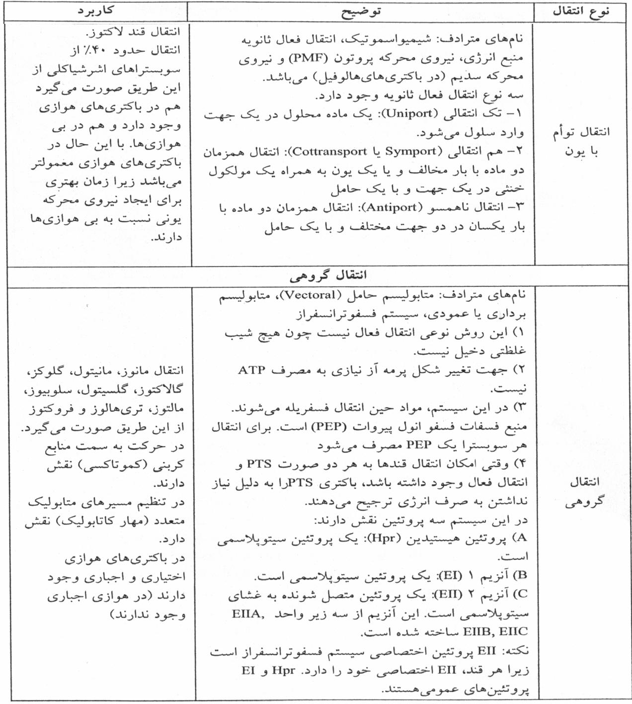
تصویر 27ترشح متابولیتها، مواد دفعی، پروتئینها، سموم (toxins) و موادی مانند siderophoreها نیز با غشا و سیستمهای ترشحی ارتباط دارد. برخی ترکیبات به بیرون فرستاده میشوند و برخی، مانند siderophoreهای متصلشونده به آهن، در ادامه به جذب آهن کمک میکنند.
سیستم ترشحی Type I در اسلاید با ABC Transporter یا ATP Binding cassette مرتبط شده است. این سیستم مستقل از Sec است، signal peptide ندارد، پروتئین در یک مرحله از غشا عبور میکند و هنگام انتقال بهشکل unfold است.
در گفتار، Type I بهعنوان راهی ساده برای ترشح ترکیبات، متابولیتها، مواد دفعی، آنزیمها یا توکسینها به محیط توصیف شد. باکتری ماده را به بیرون آزاد میکند و آن ماده ممکن است به سلول هدف برسد یا نرسد.
سیستم ترشحی Type II با نام General Secretory Pathway (GSP) آمده است. طبق اسلاید، این سیستم به Sec وابسته و دارای signal peptide است؛ طول signal peptide در اسلاید ۱۵ تا ۴۰ اسیدآمینه ذکر شده و پروتئین بهوسیلهٔ ریبوزومهای سیتوپلاسمی ساخته میشود.
اسلاید در یک بخش میگوید پروتئین در یک مرحله از غشا عبور میکند، اما در توضیحی دیگر میگوید پروتئینهای ترشحی Type II ابتدا از غشای سیتوپلاسمی عبور میکنند و سپس از غشای خارجی خارج میشوند. در گفتار، برای Type II ترشح ترکیبات پپتیدی ساختهشده روی ریبوزوم، مانند آنزیمهای پروتئینی، توضیح داده شد؛ signal peptide در ابتدای زنجیره، با حدود ۱۰ تا ۱۵ اسیدآمینه، عبور پروتئین را تسهیل میکند.
در اسلاید آمده است که پروتئینهای Type II و Type V بهصورت پیشپروتئین در ریبوزومهای سیتوپلاسمی ساخته میشوند و دارای توالی signal هستند. برای ترشح، به سیستم Sec در غشای داخلی وابستهاند. در Escherichia coli، سیستم Sec شامل SecY، SecD، SecB، SecA و SecF است. SecA بهصورت ATPase انرژی خروج پروتئین ترشحی را فراهم میکند و SecB بهعنوان chaperone پروتئین را برای ترشح آماده میکند.
| ویژگی | Type I | Type II |
|---|---|---|
| وابستگی به Sec | مستقل از Sec | طبق اسلاید وابسته به Sec |
| signal peptide | ندارد | دارد؛ طول آن ۱۵ تا ۴۰ اسید امینه |
| عبور از غشا | طبق اسلاید یکمرحلهای و هنگام انتقال بدون تغییر باقی می ماند؛ هنگام انتقال پروتئین unfold است | طبق متن اسلاید عبور یکمرحلهای |
| توضیح گفتار | ترشح ترکیبات، متابولیتها، مواد دفعی، آنزیمها یا توکسینها به محیط | ترشح ترکیبات پپتیدی ساختهشده روی ریبوزوم، مانند آنزیمهای پروتئینی |
| سرنوشت یا مسیر در توضیح درس | ماده به محیط آزاد میشود و ممکن است به سلول هدف برسد یا نرسد | signal peptide عبور پروتئین را تسهیل میکند |
در اسلاید، سیستم ترشحی Type III وابسته به Sec نیست و signal peptide ندارد؛ پروتئینها را طی یک مرحله عبور میدهد و پروتئین هنگام انتقال بدون تغییر باقی میماند. پروتئینهای ترشحی آن باید unfold باشند. همچنین در اسلاید، Type III با انتقال مستقیم پروتئین به سیتوپلاسم سلول میزبان و افزایش virulence مرتبط شده است.
در گفتار، Type III یکی از سیستمهای مهم در باکتریهای بیماریزاتر دانسته شد: باکتری ابتدا به سلول هدف متصل میشود، سپس با ایجاد اختلال در غشای سلول هدف و آسیب به cytoskeleton منافذی ایجاد میکند و توکسین را مستقیماً به داخل سلول تزریق میکند. اتصال باکتری به سلول و تزریق مستقیم، احتمال رسیدن مادهٔ مؤثر به هدف را نسبت به آزادکردن آن در محیط افزایش میدهد.
در اسلاید، این سیستم با نام دیگری نیز آمده است: سیستم وابسته به سلول (contact-dependent system). گفته شده پروتئینهای ترشحی را مانند سرنگ مستقیماً به سیتوپلاسم سلول میزبان تزریق میکند و پروتئینهای ترشحشده از این سیستم بهشدت با virulence ارتباط دارند.
| سیستم | چگونگی رسیدن ماده به هدف در توضیح درس |
|---|---|
| Type I | ماده یا توکسین به محیط آزاد میشود؛ ممکن است به هدف برسد یا نرسد، رقیق شود یا دفع شود |
| Type II | signal peptide به عبور پروتئین از غشا و دیوارهٔ باکتری کمک میکند؛ پس از آزادشدن در محیط، پروتئین همچنان ممکن است به هدف برسد یا نرسد |
| Type III | باکتری به سلول هدف متصل میشود و ماده را مستقیماً به درون آن تزریق میکند |
برای توضیح اهمیت Type III، مثالی از باکتری متصل به سلول روده یا کبد آورده شد: باکتری میخواهد سلول را تخریب کند تا موادی مانند پروتئینها، DNA، اسیدهای آلی و مواد مغذی آن در دسترس قرار گیرند. در Type III، باکتری به سلول هدف متصل میشود، به اسکلت سلولی آن آسیب میزند، پروتئینهایی ترشح میکند که منافذ ایجاد میکنند و سپس توکسین را مستقیماً وارد سلول میکند.
توکسینها میتوانند هدفهای متفاوتی داشته باشند؛ برای نمونه، ریبوزوم سلول را تخریب کنند یا رونویسی را مختل کنند. هر توکسین مکانیسم خود را دارد و دربارهٔ توکسینهای مهم در مباحث بعدی صحبت میشود.
سیستم ترشحی Type IV نامهای مترادف سیستم انتقال کونژوگاسیونی و سیستم ترشحی شبهپیلی دارد. این سیستم میتواند وابسته به Sec یا غیروابسته به Sec باشد و در انتقال DNA و پروتئین نقش دارد. وقتی یک پروکاریوت با پروکاریوت دیگر یا با سلول یوکاریوتی تماس برقرار میکند، سیستم فعال میشود؛ مجموعهای از پروتئینهای VirB در این مسیر درگیرند.
در گفتار، Type IV به کونژوگاسیون و انتقال مواد ژنتیکی، متابولیتها، توکسینها یا پروتئینها با ابزاری شبیه پیلی جنسی تشبیه شد. برخلاف Type III که منافذی برای تزریق ایجاد میکند، Type IV از ساختاری شبیه پیلی برای انتقال استفاده میکند.
سیستم ترشحی Type V با نام autotransporter آمده است؛ به Sec وابسته و دارای signal peptide است و پروتئینهای ترشحی طی دو مرحله از غشا خارج میشوند.
در گفتار، Type V تا حدی شبیه Type II و دارای signal peptide توصیف شد، اما تفاوت دقیق signal peptideها از نظر توالی اسیدآمینه، folding و کارایی انتقال مشخص نشد. دربارهٔ این تفاوتها اطلاعات جامعی ارائه نشده است.
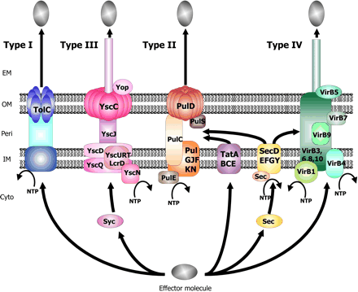
| نوع سیستم ترشحی | وابستگی به Sec و signal peptide | شیوه یا ویژگی انتقال ذکرشده |
|---|---|---|
| Type I | مستقل از Sec؛ signal peptide ندارد | عبور یکمرحلهای؛ پروتئین هنگام انتقال unfold است |
| Type II | وابسته به Sec؛ دارای signal peptide | دربارهٔ تعداد مراحل و طول signal peptide، اسلاید و گفتار اطلاعات متفاوتی میدهند؛ به متن review رجوع شود |
| Type III | وابسته به Sec نیست؛ signal peptide ندارد | عبور یکمرحلهای؛ پروتئینهای ترشحی باید unfold باشند؛ در اسلاید با انتقال مستقیم به سیتوپلاسم سلول میزبان مرتبط است |
| Type IV | میتواند وابسته یا غیروابسته به Sec باشد | سیستم انتقال کونژوگاسیونی و شبهپیلی؛ در انتقال DNA و پروتئین نقش دارد؛ پروتئینهای VirB درگیرند |
| Type V | وابسته به Sec؛ دارای signal peptide | autotransporter؛ ترشح طی دو مرحله |
در روایت درس، تا حدود ۸ تا ۱۰ سال پیش فقط Type I تا Type III شناختهشده بودند و بعد Type IV و Type V نیز معرفی شدند؛ دربارهٔ آنها اطلاعات جامعی در دسترس مدرس نبود.
برای بررسی ساختار پروتئینها و پپتیدها از bioinformatics و روشهای in silico استفاده میشود. systems biology و مهندسی سیستمهای بیولوژیک نیز از حوزههای جدیدی معرفی شدند که بهتدریج در دانشگاههای کشور راهاندازی میشوند.
یک کاربرد مهندسی ژنتیک برای ترشح پروتئین، تولید insulin است. ژن insulin را میتوان با پلاسمید یا ترکیب دیگری وارد باکتری کرد تا باکتری آن را تولید کند. اگر insulin داخل باکتری انباشته شود، ممکن است باکتری از بین برود و برای ادامهٔ تولید ناچار شویم کشت تازهای انجام دهیم.
افزودن signal peptide هدایتکننده به ابتدای زنجیرهٔ پپتیدی میتواند پروتئین را به محیط خارج هدایت کند. در این صورت، بهجای لیزکردن باکتری و استخراج insulin از داخل آن، باکتری زنده میماند و محصول به سوپرناتانت میرود. سپس insulin را میتوان با HPLC یا روش دیگری خالصسازی کرد.
این کار نمونهای از مهندسی ژنتیک است: signal peptide را به N-terminal یا C-terminal متصل میکنند و ژن مربوط را طوری وارد باکتری میکنند که پروتئین دارای signal peptide ترشح شود. همین شیوه میتواند برای تولید داروهای دیگری که ژنشان در باکتری قرار داده میشود نیز بهکار رود.
| مرحله یا ویژگی | توضیح در مثال تولید insulin |
|---|---|
| ورود ژن | ژن insulin با پلاسمید یا ترکیب دیگری وارد باکتری میشود |
| مسئلهٔ انباشتهشدن داخل سلول | insulin داخل باکتری ممکن است باعث ازبینرفتن باکتری شود و برای ادامهٔ تولید به کشت تازه نیاز باشد |
| هدایت به بیرون | افزودن signal peptide به ابتدای زنجیرهٔ پپتیدی |
| حاصل | باکتری زنده میماند و محصول به سوپرناتانت میرود |
| خالصسازی | HPLC یا روش دیگر |
| جایگاه اتصال signal peptide | N-terminal یا C-terminal |
ساختارهای پایهٔ میکروبشناسی ممکن است برای مسیرهای شغلی و پژوهشی متفاوت کاربرد داشته باشند. دانشجویان ممکن است وارد آزمایشگاه تشخیصی، پژوهش، مؤسسهٔ داروسازی یا تولید کیت شوند. ممکن است در ادامه رشتهای مانند بیوشیمی بخوانند و در دورهٔ ارشد یا دکتری واحد میکروبشناسی نداشته باشند، اما آشنایی قبلی میتواند در پروژههای بعدی جرقهای برای استفاده از یک ساختار یا روش باشد.
در آزمایشگاه تشخیصی، این دانش میتواند به تشخیص باکتری و حساسیت آن به آنتیبیوتیک کمک کند؛ در پژوهش یا صنعت نیز همان مبانی میتوانند کاربرد دیگری پیدا کنند.
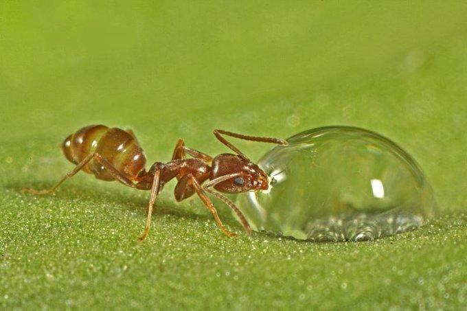
تصویر 30| موضوع | دسته یا ویژگی | توصیف یا مقدار |
|---|---|---|
| بررسی میکروسکوپی | رنگ و مورفولوژی | رنگپذیری گرم و مورفولوژی زیر میکروسکوپ |
| بررسی ماکروسکوپی | کلونی | ویژگیهای کلونی پس از کشت نمونهٔ بیمار روی پلیت حاوی محیط غنی از مواد موردنیاز باکتری |
| شکل | باسیل (bacillus) یا rod | شکل میلهای؛ rod برای باسیلهای کاملاً میلهای و چهارگوش |
| شکل | کوکوس/کوکسی (coccus/cocci) | کروی |
| شکل | اسپیریل (spirillum) | فنری |
| شکل | کوکوباسیل | باسیل فشردهتر و گردتر، شبیه کوکسی؛ نه rod تیپیک |
| آرایش | خوشهای | استافیلوکوک (staphylococcus)، در کوکسیها |
| آرایش | زنجیرهای | استرپتوکوک (streptococcus)، در کوکسیها |
| آرایش | چهارتایی | تتراد (tetrad)، در کوکسیها |
| آرایش | هشتتایی | سارسیـنا (sarcina)، در کوکسیها |
| آرایش | زنجیرهای | استرپتوباسیل (streptobacillus)، در باسیلها |
| اندازه | کوکسیها | ۰٫۷۵ تا ۱٫۵ میکرومتر |
| اندازه | باسیلها | ۰٫۷۵ تا ۸ میکرومتر |
| اندازه | اسپیروکتها | ۵ تا ۵۰۰ میکرومتر |
| ویژگی | اطلاعات ذکرشده |
|---|---|
| زمان رشد اغلب باکتریها | حدود ۱۸ تا ۲۴ ساعت؛ بعضی باکتریها حتی چند هفته زمان میخواهند |
| تعریف کلونی | مجموعهٔ میلیاردها باکتری حاصل از تکثیر یک باکتری؛ با چشم غیرمسلح دیده میشود |
| ویژگیهای کلونی | رنگ، بو، مقعر یا محدببودن، کشسانی هنگام جداکردن با لوپ |
| کلونیهای بزرگ، صورتی و کشدار | ذهن را بهسمت Klebsiella میبرند |
| کلونیهای کوچک و طلایی | همراه با گرممثبتبودن، بهخصوص در نمونهٔ زخم یا مخاط، به Staphylococcus aureus اشاره میکنند |
| باکتری مسن | اغلب کرویشکل |
| باسیل در حال رشد | ممکن است چند برابر باکتری پیر درازتر باشد |
| کوکسی در حال رشد | ممکن است طولی معادل ۵۰٪ بیشتر از عرض خود داشته باشد |
| تشخیص | ویژگیهای کلونی بهتنهایی تشخیص قطعی نیستند؛ با خصوصیات میکروسکوپی و ماکروسکوپی، رنگآمیزی و تستهای بیوشیمیایی ترکیب میشوند |
| موضوع | گروه یا جزء | مقدار یا توضیح |
|---|---|---|
| ترکیب سلول | آب | ۷۰٪ سلول |
| ترکیب سلول | وزن خشک | ۳۰٪ سلول |
| وزن خشک | پروتئین، از جمله ریبوزومها، آنزیمها و ساختارهای سطحی | حدود ۷۰٪ |
| وزن خشک | RNA | ۱۲٪ |
| وزن خشک | چربی | ۶٪ |
| وزن خشک | پلیساکارید | ۵٪ |
| وزن خشک | فسفولیپید | ۴٪ |
| وزن خشک | DNA | ۳٪ |
| ساختارهای اصلی | اجزا | مادهٔ وراثتی یا CHROMOSOME؛ سیتوپلاسم؛ غشای سیتوپلاسمی؛ مزوزوم؛ دیوارهٔ سلولی |
| ساختارهای فرعی | اجزا | کپسول؛ فلاژل/تاژک؛ پیلی/فیمبریا؛ اسپور |
| استثنا دربارهٔ ساختارهای اصلی | دیوارهٔ سلولی | حدود سه خانوادهٔ باکتریایی فاقد آن هستند؛ از نمونههای شناختهشدهٔ بیماریزا، مایکوپلاسماها هستند |
| ساختار یا جزء | ویژگی یا کارکرد ذکرشده |
|---|---|
| نوکلئوئید | ناحیهٔ متراکم و فشردهٔ حاوی DNA؛ باکتری هسته ندارد |
| DNA باکتری | اغلب یک DNA منفرد و حلقوی؛ در گفتار طول تقریبی ۱ میلیمتر ذکر شده است |
| عناصر خارجکروموزومی | از جنس DNA و گاهی RNA؛ منشأ آنها خود کروموزوم نیست و جزو ژنوم باکتری بهشمار نمیروند |
| پلاسمید | شناختهشدهترین عنصر خارجکروموزومی؛ در سیتوپلاسم شناور و خطی یا حلقوی؛ کاربرد در ژندرمانی و تولید دارو |
| ریبوزوم | ضریب رسوبی 70S؛ از زیرواحدهای 30S و 50S تشکیل شده و از روی mRNA پروتئین تولید میکند |
| زیرواحد 30S | ۲۱ پروتئین و RNA مربوط به 16S |
| زیرواحد 50S | ۳۴ پروتئین و RNAهای 23S و 5S |
| دانهٔ متاکروماتیک | تجمع فسفات؛ ممکن است در قطب باشد و رنگی متفاوت از زمینه بگیرد؛ نامهای دیگر: دانهٔ ولوتین، Babes-Ernst و دانهٔ قطبی |
| دانههای متاکروماتیک | اغلب در انتهای فاز رشد لگاریتمی دیده میشوند؛ رنگآمیزیهای ذکرشده: Albert، toluidine blue، methylene blue و Neisser |
| گرانول گلیکوژنی | با ید ردیابی میشود؛ ید گلیکوژن را قهوهای میکند؛ در مثال از محلول لوگول استفاده شده است |
| PHB | گرانول لیپیدی ذخیرهکنندهٔ کربن؛ در فراوانی کربن و کمبود نیتروژن یا مواد دیگر ساخته میشود؛ با Sudan Black سیاه میشود |
| باکتریهای ذکرشده برای PHB | Pseudomonas، Pseudomonas aeruginosa، Bacillus، Legionella و Burkholderia؛ تصویر اسلاید به P. mandelii اشاره دارد |
| سیدروفور | مولکول ترشحشدهٔ باکتری که به آهن متصل میشود و به انتقال و جذب آن کمک میکند |
| مگنتوزوم | گرانول آهنی شامل Fe₃O₄؛ احاطهشده با غشایی حاوی فسفولیپید، پروتئین و گلیکوپروتئین؛ مرتبط با خاصیت مغناطیسی و magnetotaxis |
| گرانول سولفوری | منبع انرژی ذخیرهای؛ سولفور آن در صورت نیاز به سولفات اکسید میشود |
| کربوکسیزوم | پوشش پروتئینی؛ در باکتریهای اتوتروف مانند سیانوباکترها؛ حاوی ریبولوز ۱،۵-بیسفسفات کربوکسیلاز برای تثبیت CO₂ |
| واکوئل گازی | در بعضی باکتریهای آبزی از جمله سیانوباکترها؛ کمک به شناورماندن و محافظت از نور؛ غشای پروتئینی آن به آب و حلالها اجازهٔ نفوذ نمیدهد، اما گازها عبور میکنند |
| ساختار | ترکیب، نقش یا ویژگی |
|---|---|
| غشای سیتوپلاسمی | دولایه؛ در بسیاری از یوکاریوتها استروئید وجود دارد، اما در غشای باکتری ذکرشده جز در Mycoplasma مطرح نشده است |
| ترکیب تقریبی غشا | حدود ۷۰٪ پروتئین، ۲۰ تا ۳۰٪ لیپید و مقدار کمی کربوهیدرات |
| فسفولیپیدهای غالب | فسفاتیدیل اتانولآمین حدود ۷۵٪؛ فسفاتیدیل گلیسرول حدود ۲۰٪ |
| نقشهای غشای سیتوپلاسمی | نفوذپذیری انتخابی؛ تنظیم ورود و خروج مواد؛ انتقال الکترون و فسفریلاسیون اکسیداتیو در باکتریهای هوازی؛ تولید ATP؛ ترشح آنزیمهای هیدرولیزکننده؛ مشارکت در بیوسنتز؛ گیرندهها و پروتئینهای مرتبط با chemotaxis |
| پپتیدوگلیکان | زنجیرههای گلیکان حاوی GlcNAc و MurNAc با پلهای پپتیدی دارای اتصال متقاطع |
| اسیدهای تایکوئیک | پلیریبیتولفسفات یا گلیسرولفسفات؛ مرتبط با پپتیدوگلیکان |
| اسید لیپوتایکوئیک | متصل به لیپید |
| فضای پریپلاسمی | حاوی آنزیمهای دخیل در انتقال، تجزیه و سنتز |
| غشای خارجی گرممنفیها | فسفولیپیدها، اسیدهای چرب اشباعشده، پورینها، لیپوپروتئینها و پروتئینهای انتقالی |
| LPS | ساکارید مرکزی و آنتیژن O |
| کپسول | پلیساکاریدها، از جمله دیساکاریدها و تریساکاریدها |
| تفاوت دیواره | پپتیدوگلیکان گرممنفیها نازکتر از گرممثبتهاست؛ غشای سیتوپلاسمی دو گروه ساختار کلی مشابه دارد |
| مزوزوم سپتال | ساخت دیوارهٔ جداکنندهٔ دو سلول هنگام تقسیم، اتصال به DNA و رسیدن چینخوردگیهای روبهرو به هم هنگام تقسیم دوتایی |
| مزوزوم جانبی | تنفس سلولی، ترشح پروتئینهای خارجسلولی و جایگاه آنزیمهای فسفریلاسیون اکسیداتیو |
| مسیر یا نوع | منبع انرژی، سازوکار و نمونههای ذکرشده |
|---|---|
| ABC Transporter / ATP Binding cassette | انتقال فعال اولیه؛ استفاده از ATP یا مواد فسفاتدار پرانرژی؛ پروتئین اتصالدهنده در فضای پریپلاسمی گرممنفیها و سطح خارجی گرممثبتها؛ پرمئاز سوبسترا را منتقل میکند و ATPase برای تغییر شکل آن ATP مصرف میکند |
| ABC Transporter | دو ATP برای هر مولکول سوبسترا ذکر شده: یکی برای تغییر شکل پرمئاز و دیگری برای فسفریلهکردن سوبسترا |
| نمونههای ABC Transporter | ورود هیستیدین؛ ATP/ADP translocase در Rickettsia و Chlamydia؛ انتقال اغلب مواد غذایی در گرممنفیها؛ سیستمهای مشابه در Pneumococcus و Bacillus |
| انتقال وابسته به یون | انتقال chemiosmotic یا انتقال فعال ثانویه؛ نیروی محرکهٔ پروتون (PMF) و در باکتریهای هالوفیل نیروی محرکهٔ سدیم |
| uniport | ورود یک مادهٔ محلول به سلول در یک جهت |
| symport/cotransport | انتقال همزمان دو ماده با بار مخالف، یا یک یون و مولکول خنثی، در یک جهت و با یک حامل |
| antiport | انتقال همزمان دو ماده در دو جهت مخالف و با یک حامل؛ متن اسلاید میگوید دو ماده بار یکسان دارند |
| انتقال گروهی/فسفوترانسفراز | منبع فسفات phosphoenolpyruvate (PEP)؛ یک PEP برای هر سوبسترا؛ مواد هنگام انتقال فسفریله میشوند؛ طبق اسلاید شیب غلظتی دخیل نیست و برای تغییر شکل پرمئاز ATP لازم نیست |
| پروتئینهای سیستم فسفوترانسفراز | HPr و EI سیتوپلاسمی؛ EII متصل به غشا و دارای زیرواحدهای EIIA، EIIB و EIIC؛ EII برای هر قند اختصاصی و HPr و EI عمومیاند |
| موارد ذکرشده برای سیستم فسفوترانسفراز | انتقال لاکتوز؛ حدود ۸۴٪ سوبستراهای Escherichia coli؛ در باکتریهای هوازی و بیهوازی، با شیوع بیشتر در هوازیها |
| قندهای ذکرشده برای سیستم فسفوترانسفراز | mannose، mannitol، گالاکتون/گالاکتیتول، cellobiose، trehalose و fructose؛ یکی از نامهای قندی در متن اسلاید مخدوش است |
| کاربردهای منسوب به انتقال وابسته به یون در اسلاید | chemotaxis، حرکت بهسمت مواد کربنی، تنظیم مسیرهای متابولیک و مهار کاتابولیک؛ ارتباط دقیق با ردیفها روشن نیست |
| موضوع | ویژگی یا نمونه |
|---|---|
| رنگ باکتری منفرد | ممکن است ناشی از گرانولهای درونسیتوپلاسمی باشد؛ زیر میکروسکوپ دیده میشود |
| رنگ کلونی | رنگ مجموعهٔ باکتریها؛ ماکروسکوپی |
| پیگمان ترشحشده | محیط کشت را تغییر رنگ میدهد؛ ماکروسکوپی |
| قرمز | Serratia marcescens؛ prodigiosin |
| بنفش | Bacillus violaceus |
| نارنجی یا زرد | Staphylococcus aureus، Sarcina و برخی Mycobacteriumها؛ نام phitocol در اسلاید |
| صورتی | Bacillus subtilis |
| سیاه | Bacillus mesentericus |
| سبز فلورسانس زیر UV | fluorescein یا pyoverdin؛ برای Pseudomonas aeruginosa و Bacillus fluorescens putidus ذکر شده است |
| آبیِ غیرفلورسانس | pyocyanin؛ تولیدشده توسط Pseudomonas aeruginosa |
| Type I | مستقل از Sec؛ بدون signal peptide؛ عبور یکمرحلهای؛ پروتئین هنگام انتقال unfold است؛ ماده به محیط آزاد میشود |
| Type II | وابسته به Sec و دارای signal peptide؛ طول signal peptide در اسلاید ۱۵ تا ۴۰ و در گفتار ۱۰ تا ۱۵ اسیدآمینه؛ دربارهٔ تعداد مراحل عبور اطلاعات متعارض است |
| Type III | مستقل از Sec و بدون signal peptide؛ انتقال یکمرحلهای؛ در اسلاید انتقال مستقیم به سیتوپلاسم سلول میزبان و ارتباط با virulence ذکر شده است |
| Type IV | سیستم انتقال کونژوگاسیونی و شبهپیلی؛ وابسته یا غیروابسته به Sec؛ انتقال DNA و پروتئین؛ دخالت پروتئینهای VirB |
| Type V | autotransporter؛ وابسته به Sec، دارای signal peptide و ترشح طی دو مرحله |
| Type III در مثال گفتار | اتصال به سلول هدف، ایجاد اختلال در غشا و آسیب به cytoskeleton، ایجاد منافذ و تزریق مستقیم توکسین |
| موضوع | اطلاعات ذکرشده |
|---|---|
| Thermus aquaticus و PCR | منبع DNA پلیمراز thermostable؛ در روایت درس با Kary Mullis، نمونهٔ سنگ کنار چشمههای آب گرم و استخراج DNA پلیمراز مرتبط است؛ PCR برای تشخیص بیماریهای مختلف از جمله بیماریهای ژنتیکی و هماتولوژیک کاربرد دارد |
| تجزیهٔ پساب صنعتی | باکتری جداشده برای تجزیهٔ ترکیبات پساب کارخانههای ریسندگی؛ نگهداری پساب چند روز در استخر با افزودن مداوم باکتریها؛ تغییرات ژنتیکی برای افزایش سرعت تکثیر و ارتقای سویه |
| تولید insulin | ورود ژن با پلاسمید یا ترکیب دیگر؛ افزودن signal peptide برای ترشح به سوپرناتانت و زندهماندن باکتری؛ خالصسازی با HPLC یا روش دیگر؛ اتصال signal peptide به N-terminal یا C-terminal |
| منابع درسی | Jawetz و Murray؛ برای امتحان مباحث تدریسشده توسط دکتر فرهادی، اسلایدها و PDFهای ارائهشده کافیاند |
| تقسیم تدریس | حدود ۵۰٪ مطالب با دکتر فرهادی و ۵۰٪ با خانم دکتر توسل؛ مسئول درس نظری و عملی و تعیینکنندهٔ سیاست میانترم و وزن میانترم و فاینال، خانم دکتر توسل معرفی شدهاند |
| نمونهٔ تعداد سؤال | دکتر فرهادی معمولاً از هر جلسهٔ پیش از میانترم ۵ تا ۶ سؤال تستی میدهد؛ در مثال سه جلسه، از هر جلسه ۵ تا ۶ سؤال |
| کاربردهای مسیر شغلی | آزمایشگاه تشخیصی، پژوهش، مؤسسهٔ داروسازی و تولید کیت؛ کمک به تشخیص باکتری و حساسیت آنتیبیوتیکی |
تفاوت خصوصیات میکروسکوپی و ماکروسکوپی باکتریها را شرح دهید و توضیح دهید چرا ویژگیهای کلونی بهتنهایی برای تشخیص قطعی کافی نیستند.
خصوصیات میکروسکوپی شامل رنگپذیری گرم و مورفولوژی زیر میکروسکوپ است؛ خصوصیات ماکروسکوپی شامل ویژگیهای کلونی پس از کشت نمونه روی پلیت است. ویژگیهایی مانند رنگ، بو، شکل یا کشسانی کلونی به تشخیص جهت میدهند، اما تشخیص با ترکیب خصوصیات میکروسکوپی و ماکروسکوپی، رنگآمیزی و تستهای بیوشیمیایی انجام میشود.
ریبوزوم باکتری از چه زیرواحدهایی تشکیل شده و هر زیرواحد چه اجزایی دارد؟
ریبوزوم باکتری ضریب رسوبی 70S دارد و از زیرواحدهای 30S و 50S تشکیل شده است. زیرواحد 30S دارای ۲۱ پروتئین و RNA مربوط به 16S است؛ زیرواحد 50S دارای ۳۴ پروتئین و RNAهای 23S و 5S است. ریبوزوم از روی mRNA پروتئین تولید میکند.
ویژگیهای گرانولهای PHB، شرایط ذخیرهشدن آنها و روش رنگآمیزی ذکرشده برای شناساییشان را شرح دهید.
گرانولهای پلیبتاهیدروکسیبوتیریک اسید (PHB) ذخیرهٔ کربناند و ماهیت لیپیدی دارند. وقتی کربن محیط فراوان و نیتروژن یا مواد دیگر کم باشد، باکتری کربن را بهشکل PHB ذخیره میکند. این گرانولها با Sudan Black سیاه میشوند و ممکن است در رنگآمیزی گرم با اسپور اشتباه شوند.
انتقال وابسته به پروتئینهای اتصالدهنده (ABC Transporter) چگونه انجام میشود و برای انتقال هر مولکول سوبسترا چه میزان ATP ذکر شده است؟
سوبسترا به پروتئین اتصالدهنده ارائه میشود؛ پروتئینهای اتصالدهنده در گرممنفیها در فضای پریپلاسمی و در گرممثبتها در سطح خارجی سلول قرار دارند. پرمئاز سوبسترا را از کمپلکس پروتئین اتصالدهنده ـ سوبسترا میگیرد و کانالی برای عبور آن از غشا فراهم میکند. ATPase متصل به غشا برای تغییر شکل پرمئاز ATP مصرف میکند. برای انتقال هر مولکول سوبسترا دو ATP ذکر شده است: یکی برای تغییر شکل پرمئاز و دیگری برای فسفریلهکردن سوبسترا.
در توضیح درس، Type I، Type II و Type III از نظر چگونگی رسیدن مادهٔ ترشحشده به سلول هدف چه تفاوتی دارند؟
در Type I ماده یا توکسین به محیط آزاد میشود و ممکن است به سلول هدف برسد یا نرسد، رقیق شود یا دفع شود. در Type II، signal peptide به عبور پروتئین از غشا و دیوارهٔ باکتری کمک میکند، اما پس از آزادشدن در محیط، پروتئین همچنان ممکن است به هدف برسد یا نرسد. در Type III، باکتری به سلول هدف متصل میشود و ماده را مستقیماً به درون آن تزریق میکند.
کدام گزینه آرایش خوشهای کوکسیها را نام میبرد؟
استافیلوکوک آرایش خوشهای کوکسیهاست.
کدام توصیف دربارهٔ نوکلئوئید با درس سازگار است؟
نوکلئوئید ناحیهای متراکم و فشرده برای قرارگیری DNA است؛ باکتری هسته ندارد.
کدام گزینه دربارهٔ دانههای متاکروماتیک درست است؟
دانههای متاکروماتیک تجمع فسفاتاند و رنگی متفاوت از رنگ زمینه میگیرند.
برای شناسایی گرانولهای گلیکوژنی ذکرشده در درس از چه چیزی استفاده میشود؟
ید گلیکوژن را قهوهای میکند؛ در مثال درس از محلول لوگول حاوی ید استفاده میشود.
کدام ترکیب دربارهٔ مگنتوزومها مطابق درس است؟
مگنتوزومها گرانولهای آهنی شامل Fe₃O₄ هستند و با خاصیت مغناطیسی و magnetotaxis ارتباط دارند.
کدام گزینه یکی از نقشهای غشای سیتوپلاسمی باکتری است؟
تولید ATP از نقشهای ذکرشده برای غشای سیتوپلاسمی است.
در ABC Transporter، چند ATP برای انتقال هر مولکول سوبسترا ذکر شده است؟
دو ATP ذکر شده است: یکی برای تغییر شکل پرمئاز و دیگری برای فسفریلهکردن سوبسترا.
در انتقال گروهی، منبع فسفات ذکرشده کدام است؟
منبع فسفات phosphoenolpyruvate (PEP) است و برای انتقال هر سوبسترا یک PEP مصرف میشود.
کدام توصیف با Type III در درس سازگار است؟
در Type III باکتری به سلول هدف متصل میشود و ماده را مستقیماً به درون آن تزریق میکند.
کدام پیگمان <em>Pseudomonas aeruginosa</em> بدون تابش UV آبی دیده میشود؟
pyocyanin رنگدانهٔ آبیِ غیرفلورسانس است؛ pyoverdin زیر UV سبز فلورسانس نشان میدهد.
ادیتور: علیرضا اسفندیاری
منابع استفادهشده:
برآورد تقریبی تکمیل محتوا: حدود 99%